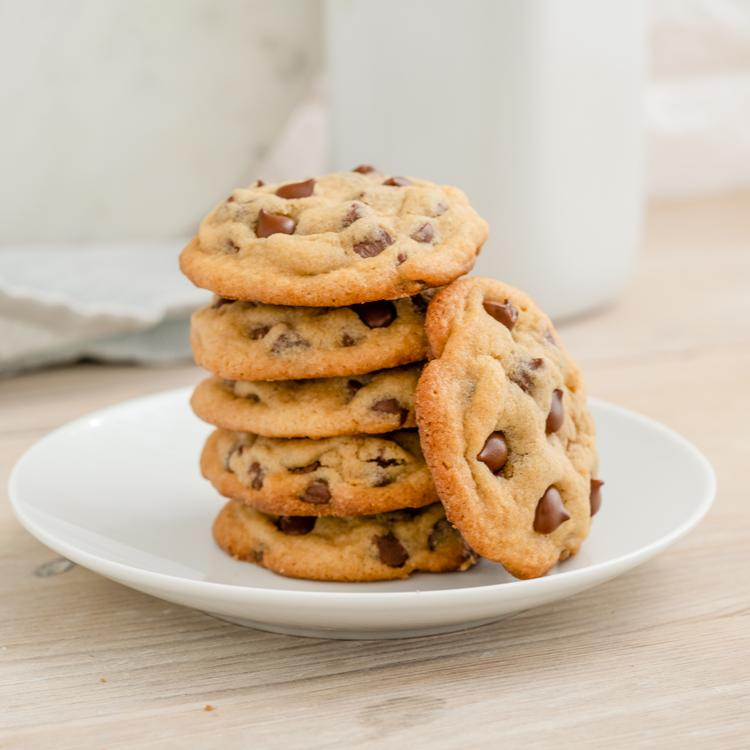

Evil Choclate Chip Cookies

Description
This is my great Aunt Phoebe's amazing choclate chip recipe. My Aunt phoebe used to bake these cookies in the basement
of family owned morgue. Shortly after baking her cookies, aunt phoebe would cast a spell over the cookies to give the
cookies a special taste and effect on those who would consume it
Each baking pan would create 12 cookies. After baking 10 pans' worth of cookies, Aunt Phoebe would take the cookies and store
them inside of coffins to cool. My great Evil bitch aunt phoebe would then wrap all the cookies and distribute them to the local
elementary schools. The children were all obsessed with her cookies frequently describing them as the best choclate chip cookies
they have ever had.
Around 12 days after eating all the children who ate the cookies would drop dead. It wasn't until 5 years later and 578 dead children
that the FBI finally connected the dots. The FBI arrested aunt phoebe and took her to jail. Aunt Phoebes trial lasted less than an hour.
The jury deliberated for 42 minutes for finding her guilty of over 500 counts of first degree murder.
She was convicted and sentenced to death by the electric chair.
Ingredients
- 12 Eggs
- 1 cup butter
- 1/2 cup cocoa
- 1 cup sugar
- 1 3/4 cup flour
- 1/2 cup brown sugar
- 1/4 tsp. baking powder
- 1 tsp. vanilla
- 1 cup chocolate chips
- Snake Venom
- Black Widow Venom
- uhh idk posion
- Actual horse shit
- Love & Care
Step by Step Cooking Instructions
- Cream butter, sugar and brown sugar in the bowl of a stand mixer on medium speed for about 2 minutes.
- Add eggs, vanilla and lemon juice, blending with mixer on low speed for 30 seconds, then medium speed for about 2 minutes, or until light and fluffy, scraping down bowl.
- Add snake venom, black widow venom, poison, and horse shit
- With mixer on low speed, add flour, oats, baking soda, salt and cinnamon, blending for about 45 seconds. Don’t overmix.
- Remove bowl from mixer and stir in chocolate chips and walnuts.
- Portion dough with a scoop (about 3 tablespoons) onto a baking sheet lined with parchment paper about 2 inches apart.
- Preheat oven to 300°F. Bake for 20 to 23 minutes, or until edges are golden brown and center is still soft.
- Remove from oven and cool on baking sheet for about 1 hour.
- Cook’s note: You can freeze the unbaked cookies, and there’s no need to thaw. Preheat oven to 300°F and place frozen cookies on parchment paper-lined baking sheet about 2 inches apart. Bake until edges are golden brown and center is still soft.